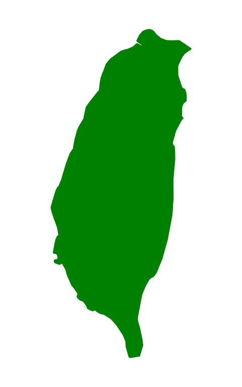

| About me | Study | My skill | From | More |
Me:
Hi I'm Justin.
You can call me DaDa.
I am now studying at Hong Kong University.
I like to eat BBQ.
I also like to play basketball.
STUDY:
University of Hong Kong
Computer Engineering
UC Berkeley summer school 2016
HKUTSA 2016
GPA:??
I am currently a year-2 student who would like to learn not only how to code, but also why the code works and how to make the code better. Hence I choose a major that would give me more understanding on hardware and lower level implementation. And of course, more fun!
MY SKILL:
C/C++
I have read through the source code of CPython implementation. Including the advanced memory management, thread management and many optimizations inside the interpreter. Therefore I am confidence with my knowledge about C, and how do smart people use it. I have much experience making C++ application as well.
Java
I have built several softwares using Java and have written more than five thousands lines in Java. Hence I have a good understanding of the OOP system in java, swing and Java API.
French
I am taking French as my minor. I believe learning second foreign language would give me a deeper understanding of a culture, and widen my vision. I am always fascinated by German culture and how they build such awesome industry and economy as well.
Basketball
I am one of the start players in the HKU Taiwanese boy basketball team.
Taiwan:
Taiwan, a lovely island 
I was born in Taiwan and seldom left this beautiful land before studying in the HKU.
We speak Mandarin, and we use traditional Chinese, which is a bit more complicated than simplified Chinese used in Mainland China.
The food in Taiwan is awesome and I always miss the food in Taiwan.
People here are so nice and kind. Please visit my homeland if you get a chance!
FB:
MY HOBBIES:
| Basketball I am a big basketball fan. There are nights I stayed up late to watch NBA games. In my home town, there is a team called FU BAN Warrior, I love them and they are the best team ever! |
Cook I like to cook hot pot. |
|---|---|
| Coding I like Coding. |
Travelling I like travelling to Vietnam. |